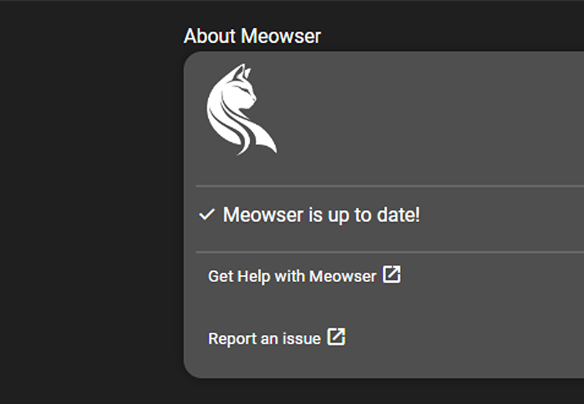
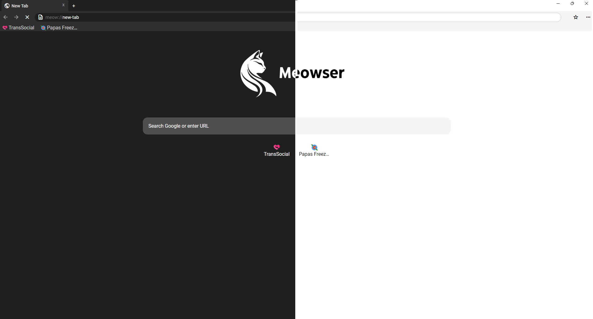

Meowser isn't your typical browser. We're dedicated to putting users first, protecting your privacy, and creating a browsing experience that's as safe and customizable as it is delightful. Out mission is to make the web a cozier, friendlier place for everyone.
"Meowser exists because we believe in the health of the internet and the well-being of your online life."
katniny, Founder of Katniny Studios, Main Meowser Developer
waving_hand No AI. No BS.
With Meowser, we keep things simple and human. No artifical intellgence built into our browser, no unnecessary fluff--just a pure, straightforward browsing experience. Meowser is made with human knowledge, not GPT tools. Learn more about brainmade.org

update Regularly Updated
Meowser will update to add new features, fix bugs, and ensure your security. You don't have to keep track manually either--we'll alert you of new updates and automatically install it for you next time you start Meowser.
palette Themes & Mods
Customize Meowser however you want. Add custom themes, add Mods, and much more. (Custom themes and Mods are still in development. Though, you can still choose between Dark and Light mode).

Sharing our code with the world...
In a time where online experiences are often controlled by a few, we believe in empowering the community to build something better. By embracing open source, we're setting the foundation for a more ethical, privacy-first internet, where users have more control and the web comes a healthier space for everyone.